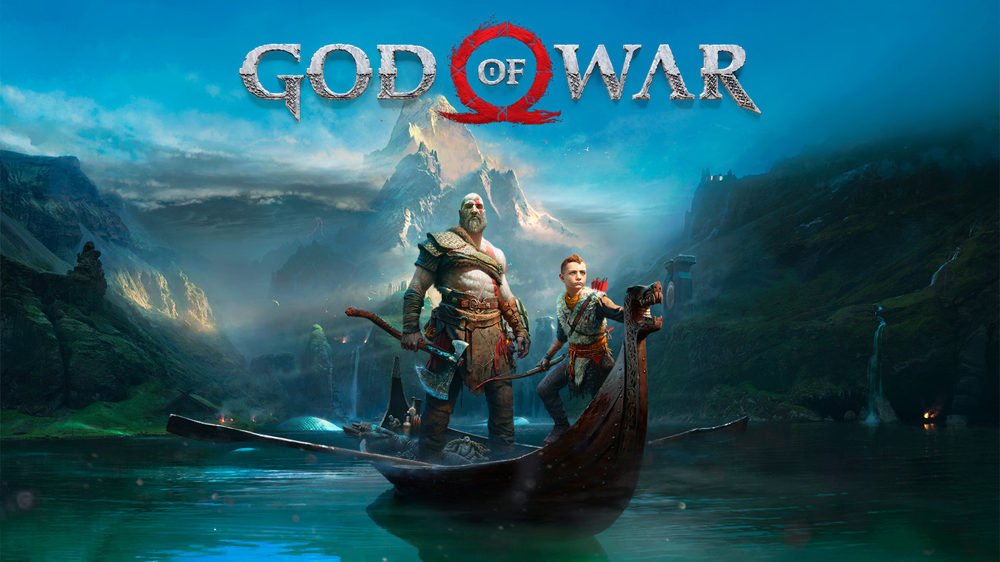

¿Qué es "God of War" como franquicia de videojuegos?
God of War (literalmente en español Dios de la Guerra) es una serie de videojuegos en 3ª. persona creada por SCE Santa Monica Studio y distribuida por Sony Computer Entertainment. Se basa en las aventuras de un semidiós espartano, Kratos, quien se enfrenta a diversos personajes de la mitología griega y nórdica, tanto héroes (Heracles, Teseo, Perseo, etc.); especies mitológicas (gorgonas, arpías, o minotauros); dioses griegos (Ares, Poseidón, Zeus, entre otros), titanes (como Cronos) y dioses primordiales (como Gaia). Aunque el guerrero espartano acostumbra enemistad con la mayoría de los dioses, recibe ayuda de muchos de ellos en algún momento de cada entrega, en especial de Atenea.
Los juegos están disponibles para las consolas PlayStation 2, PlayStation 3, PlayStation 4, PlayStation Portable, PlayStation Vita y también para teléfonos móviles. Se han realizado remasterizaciones de los primeros juegos para jugarse en consolas modernas, por lo cual hasta el día de hoy, seis de los ocho títulos están disponibles para PS3, a excepción de God of War: Betrayal y God of War de 2018. El día 11 de noviembre de 2020 se informó que la saga había superado los 51 millones de copias totales,1 situándola como una de las 3 sagas más importantes de la marca de Sony Interactive Entertainment, junto a Uncharted y Gran Turismo
Historia
El guerrero espartano sucumbe totalmente al poder de Ares, quien le exige ciertas tareas de destrucción y conquista. Las tácticas del ejército de Kratos son aún más brutales que antes, asesinando sanguinariamente a cualquiera que opusiera alguna mínima resistencia. En una de sus misiones, Kratos debía quemar una aldea que se oponía a la armada de Esparta. En su afán de sangre y conquista, Kratos quiso ingresar al templo de la aldea, el oráculo le advierte que no debía entrar, sin embargo la hace a un lado e ingresa, asesinando a todos los presentes. Cuando lanza por última vez sus espadas hacia sus víctimas, entiende que había asesinado a su esposa e hija. Kratos queda devastado y como castigo por tal acción y brutalidad, tendría adheridas sobre su piel las cenizas de su esposa e hija por la eternidad; aunque Ares le explica que hizo eso para que no tenga ningún lazo afectivo y poder convertirlo en el guerrero perfecto, aun así, el guerrero espartano renunció a seguir siendo el súbdito del dios de la guerra.
Kratos asesina a Gaia y cree asesinar al padre de los dioses, quien luego emerge de los escombros para matar al espartano. Kratos se refugia en su mente, donde se presentan los viejos y malignos recuerdos que lo atormentan, pero allí aparece Pandora y lo ayuda a perdonarse a sí mismo por todas las cosas malas que hizo en el pasado, liberando el poder de la esperanza que había permanecido oculto en él. Luego, Kratos vuelve a la realidad y finaliza su venganza, asesinando violentamente a Zeus. Luego, Kratos se queda contemplando cómo quedó el mundo, cuando de pronto aparece Atenea exigiéndole el poder de la esperanza, que había usado para matar a Zeus. Han pasado muchos años. Kratos vive ahora en las tierras nórdicas, muy lejos de la sombra de los Dioses. Aunque su vida ha permanecido muy tranquila, esta ha dado un cambio con la muerte de Faye, una mujer que conoció y con la que tuvo un hijo llamado Atreus.
Entregas principales que siguien la cronología de "Halo infinite"
En esta lista incluí los títulos principales de la franquicia en consolas:
- God of War (2005)
- God of War II(2007)
- God of War Chains of Olympus (2008)
- God of War III (2010)
- God of War Ghost of Sparta (2010)
- God of War Ascension(2013)
- God of War (2018)
Personajes principales a lo largo de la franquicia
- Kratos : Era un capitán de un ejército espartano de rápido crecimiento, en primer lugar con sólo cincuenta hombres que se convirtieron en miles.Ganó muchas victorias y trajo muchos tesoros a su familia. Kratos servio a Ares lealmente, bombardeo pueblos y extendio el caos en su nombre. Sin embargo, durante una redada en una aldea de los seguidores de Atenea, Ares lo engañó para asesinar a su esposa e hija en la rabia ciega, un acto que más tarde describiría como lo necesario para que Kratos sea el guerrero perfecto. Asi comienza la gran hisotia de Kratos
- Atreus:
Atreus es el hijo de Kratos y Faye. Acompaña a su padre en God of War (2018).
Atreus era un niño enfermizo que ha vivido siempre con su madre. Ambos pasaban largos períodos de tiempo sin ver a Kratos, pero tras el fallecimiento de Faye, Atreus se ve obligado a convivir con Kratos y a ser entrenado por él. A diferencia del espartano, su hijo conoce el lenguaje nórdico antiguo, por lo que le servirá de ayuda en determinadas situaciones.
Atreus está equipado con un arco mágico, cuyo aprendizaje forma parte del entrenamiento de su padre. También está equipado con una pequeña daga, perteneciente a su madre.
- Zeus: Tras liberar a sus hermanos, Zeus declaró la guerra a los Titanes, consumido por sentimientos de venganza. Traicionando a Gaia, la Titánide que lo había criado, declaró la guerra a todos ellos por los pecados de uno solo. Los nuevos gobernantes del mundo, los Dioses, haciéndose llamar los Olímpicos, lucharon en contra de sus predecesores con gran ferocidad. La batalla entre los Olímpicos y los Titanes formó el paisaje del mundo mortal, sacudiendo la tierra con grandes terremotos y derrumbando montañas. Durante la guerra, Zeus creó la todopoderosa Espada del Olimpo, utilizada para desterrar a los Titanes a los más sucios pozos del Tártaro, sirviéndose del Guantelete de Zeus para crear las cadenas que los atasen.
- Atenea: Atenea es la Diosa de la Sabiduría y la Guerra. Hija de Zeus, es la deuteragonista de la saga God of War, apareciendo en su mayoría como aliada de Kratos. Atenea trató de advertirle acerca de los muchos peligros en el camino a la ambrosía. Kratos simplemente ignoró sus advertencias. Las advertencias de Atenea no detienen a Kratos, y continuó su camino de venganza hasta que se enfrentó a Zeus una vez más. Teniendo la Espada del Olimpo, Kratos había apuñalado a Zeus con ella varias veces hasta que Atenea intervino.
¿Qué es "God of War 2018"
God of War es un videojuego de acción-aventura desarrollado por SCE Santa Monica Studio y publicado por Sony Interactive Entertainment. Su lanzamiento se produjo el 20 de abril de 2018, en exclusiva para la consola PlayStation 4.1 Se trata de la octava entrega de la serie de God of War, cronológicamente, y la secuela de God of War III. La historia se centra en la mitología nórdica y Kratos regresa como el protagonista principal.
Han pasado años desde que Kratos tomó su venganza contra los Dioses Olímpicos. Habiendo sobrevivido la pelea final contra su padre Zeus, Kratos vive ahora con su joven hijo Atreus en el mundo de los Dioses Nórdicos, una tierra hostil habitada por feroces monstruos y guerreros. Kratos deberá actuar como mentor y protector de su hijo, y tendrá que dominar la ira y enojo que tuvo durante muchos años y atar cabos sueltos.
Las armas principales de Kratos durante todo el videojuego son un hacha llamada "Leviathan" y un escudo. El Leviathan se puede lanzar para golpear o congelar a ciertos rivales, y regresará a la mano del personaje al oprimir un botón. Mientras que el escudo se utiliza tanto para retener y contraatacar golpes como para atacar a los enemigos durante el combate. Esta vez los saltos y dobles saltos de Kratos son suspendidos para dejar lugar a la escalada como forma de exploración de este nuevo mundo.

Página oficial de "Playstation"
Página Playstation
Regresar a la página principal